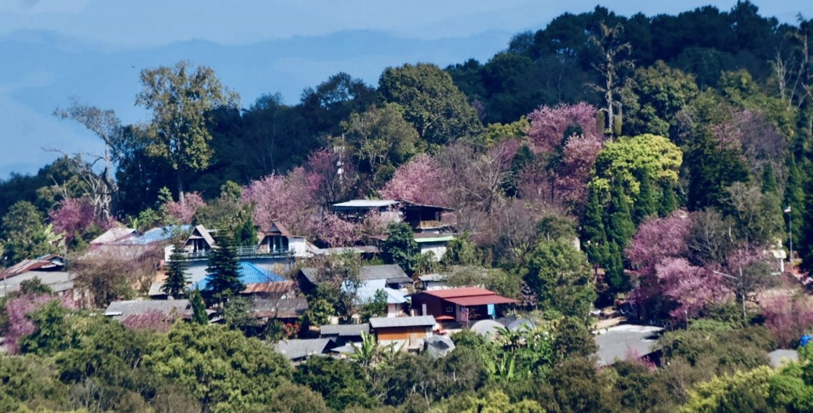

ส่งคำขอจองกิจกรรม
เลือกกาแฟและกิจกรรม พร้อมสรุปราคา
Send a Booking Request

กิจกรรมที่ 2: กาแฟจากผืนป่า · 2 วัน 1 คืน
Coffee Origin Immersion · 2 Days / 1 Night
เรียนรู้สายพันธุ์ เก็บผลสุก แปรรูป คั่วและชิมกับผู้ปลูก พร้อมพักโฮมสเตย์ 1 คืนและอาหาร 4 มื้อ
Explore the farm, harvest and process coffee, roast and taste with the grower. Includes one homestay night and four meals.
เริ่มต้น 3,890 บาท/คน สำหรับกลุ่ม 6–10 คน
From THB 3,890/person for groups of 6–10
4–5 คน: 4,290 บาท/คน · มัดจำ 50% หลังร้านยืนยัน
4–5 guests: THB 4,290/person · 50% deposit after confirmation
ดูรายละเอียดและสอบถามวันว่าง / Details & dates
กิจกรรมที่ 1: KCK Ecology Coffee Walk

จากดิน ร่มเงา และความหลากหลายของชีวิต สู่การแปรรูป การหมัก และรสชาติในถ้วย
From soil, shade and biodiversity to processing, fermentation and flavour in the cup.
ดูภาพและรายละเอียดกิจกรรมที่ 1 / Explore experience 1
เรียนรู้กาแฟใต้ร่มเงาป่า และชิมจาก dripbag 3 process: Washed, Honey, Natural
Explore shade-grown coffee and taste three processes from drip bags: Washed, Honey and Natural.
300 บาท/คน • THB 300/person • 60–90 นาที / minutes
ขั้นต่ำ 1,200 บาท/รอบ • Minimum THB 1,200 per round.
รวมของฝาก Drip Bag 3 ซอง และคู่มือ 4×6 นิ้ว • Includes three drip bags and a 4×6-inch guide.
ไม่รวมการเดินทาง อาหาร และที่พัก • Excludes transport, meals and accommodation.
ศุกร์–อาทิตย์ / Friday–Sunday
ไม่เกิน 15 คน/วัน ต้องรอ KCK ตรวจสอบและยืนยัน • Up to 15 guests/day, subject to confirmation.
กรอกและกดส่งใน Google Form ให้ครบComplete the Google Form and press Submit.
คำขอยังไม่ใช่การยืนยันการจองหรือการชำระเงิน KCK ต้องตรวจสอบวัน จำนวนที่ว่าง และราคาอีกครั้ง
A request is not a booking or payment confirmation. KCK must confirm your date, availability and price.
กิจกรรมอื่นในแบบฟอร์ม: กรุณารอการยืนยันราคาและวันเปิดกิจกรรมจาก KCK
For other experiences listed in the form, please wait for KCK to confirm prices and dates.
เปิดแบบฟอร์มจอง / Open booking form
หากแบบฟอร์มด้านล่างไม่แสดงบน iPhone/iPad ให้กดปุ่มด้านบน ป้ายและคำถามในแบบฟอร์มเป็นไปตาม Google Form ต้นฉบับ
If the form does not appear on your iPhone/iPad, use the button above. Questions and language inside the form follow the original Google Form.